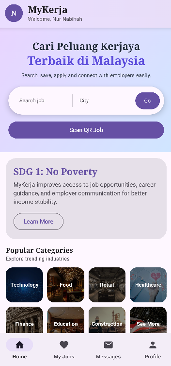
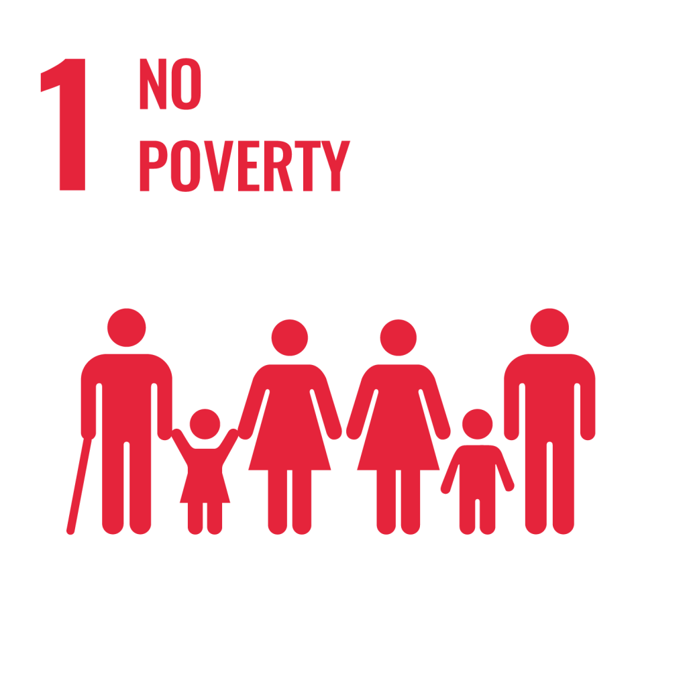
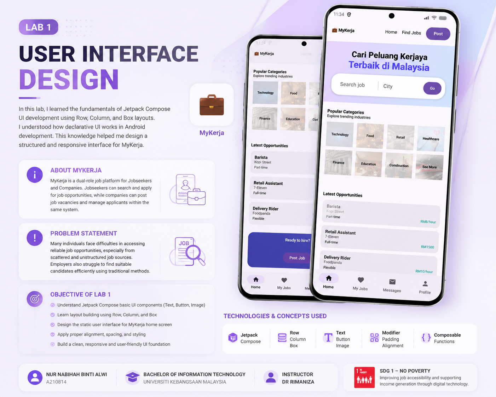
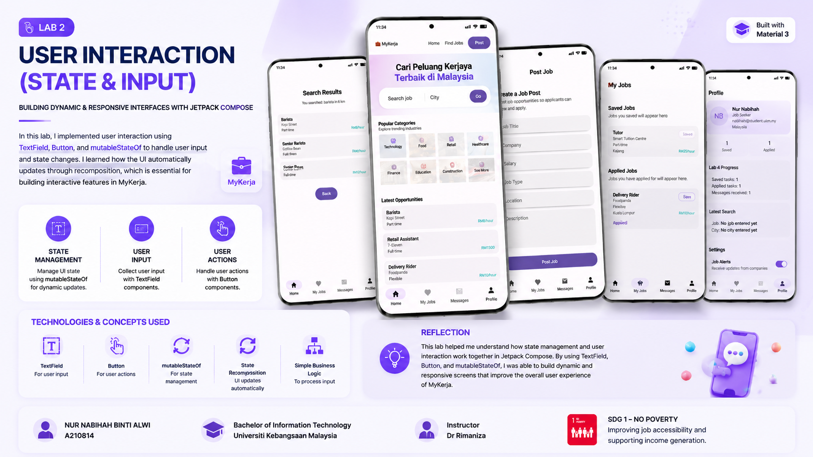
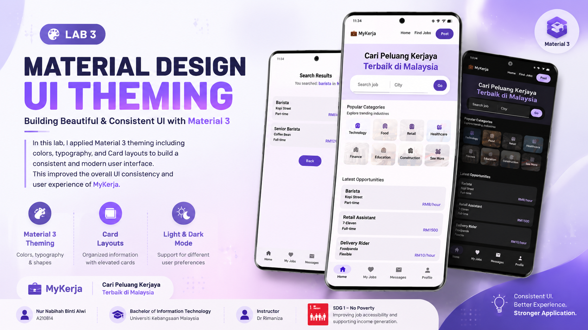
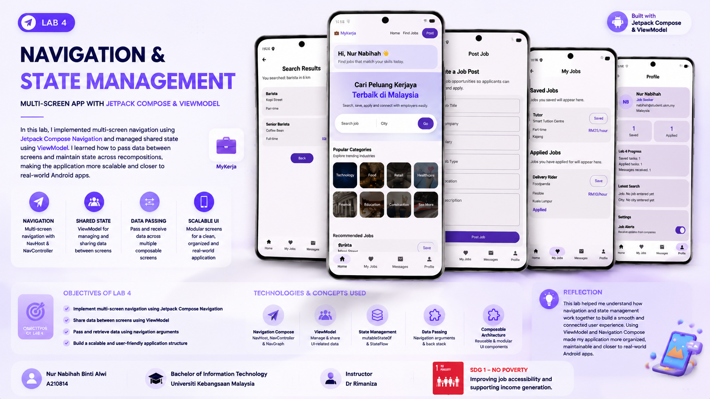
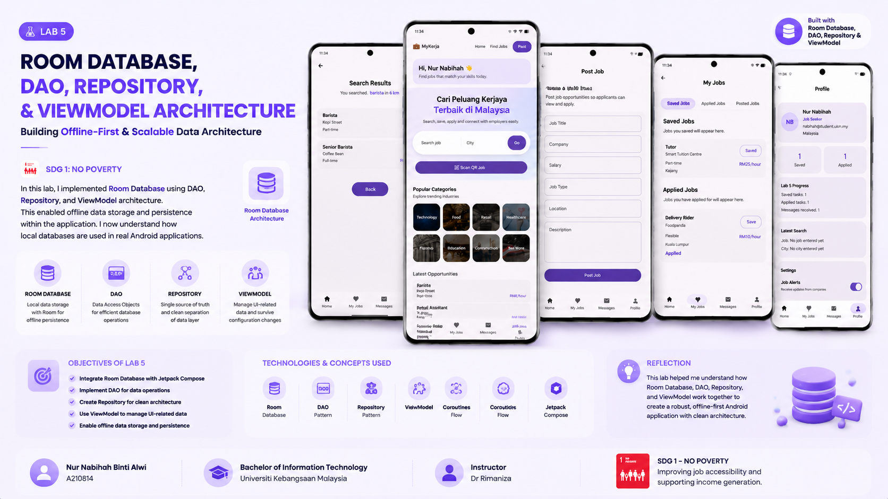
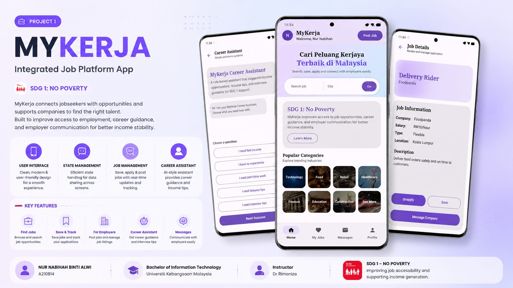
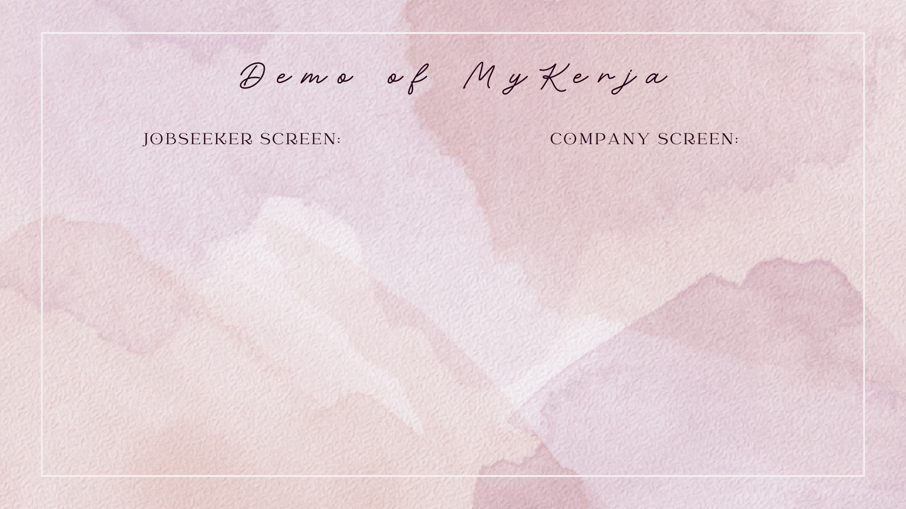

This e-Portfolio documents my learning journey in Mobile Programming using Jetpack Compose. Throughout this course, I developed MyKerja, a dual-role mobile application that connects job seekers and employers in a single integrated platform to improve access to employment opportunities.

Introduction & Sustainable Development Goal
Matric No: A210814
Programme: Bachelor of Information Technology
University: Universiti Kebangsaan Malaysia
Instructor: Dr Rimaniza
This e-Portfolio documents my learning journey in Mobile Programming using Jetpack Compose. Throughout this course, I developed an application called MyKerja, a dual-role job platform consisting of Jobseeker and Company users.
Jobseekers can search and apply for job opportunities, while companies can post job vacancies and manage applicants within the same system. This project demonstrates how modern Android application development can solve real-world problems using Kotlin, Jetpack Compose, Room Database, Firebase, REST API, GPS and QR technology.

MyKerja supports Sustainable Development Goal 1 (No Poverty) by improving access to employment opportunities through digital technology.
The application allows job seekers to search and apply for suitable jobs while enabling employers to post vacancies and manage applicants efficiently. By connecting both parties in one integrated platform, MyKerja promotes employment opportunities, supports income generation, and contributes to reducing poverty through accessible digital services.
Mobile Programming Learning Journey

This laboratory introduced the basic concepts of Jetpack Compose. The application interface was developed using fundamental layouts such as Row, Column, and Box, together with Text, Image, and Button components.
In this lab, I learned the fundamentals of Jetpack Compose UI development using Row, Column, and Box layouts. I understood how declarative UI works in Android development. This knowledge helped me design a structured and responsive interface for MyKerja.

This laboratory focused on creating interactive Android applications using TextField, Button, mutableStateOf and state management. User inputs were dynamically reflected on the interface through recomposition.
This lab introduced state management using TextField, Button, and mutableStateOf. I learned how user input dynamically updates the UI through recomposition. This is essential for interactive features in MyKerja.

In this laboratory, Material Design 3 components were implemented to improve application consistency. Themes, Cards, Typography and Color Schemes were applied to create a modern Android interface.
I applied Material 3 theming including colors, typography, and Card layouts. This improved the UI consistency and user experience. It made my application look more professional and user-friendly.

This laboratory introduced multi-screen application development using Navigation Compose. It also demonstrated how ViewModel can be used to preserve UI state and share data between different screens while maintaining a clean MVVM architecture.
I implemented multi-screen navigation using NavController and ViewModel for shared state management. I learned how data can be passed and preserved across different screens. This made MyKerja more scalable and closer to a real-world application.

This laboratory focused on implementing Room Database using Entity, DAO, Repository, and ViewModel. The application was enhanced with local data persistence, allowing information to be stored and retrieved even when the device is offline.
I integrated Room Database using DAO, Repository, and ViewModel architecture. This enabled offline data storage and persistence within the application. I now understand how local databases are used in real Android applications.
Application Development Throughout This Course

Problem Statement
Many job seekers face difficulty accessing centralized and reliable job information, while employers also struggle to find suitable candidates efficiently. This project addresses both issues by implementing a single integrated application where both Jobseeker and Company functionalities exist within the same account system. Users can access both roles without switching accounts, allowing Jobseekers to search and apply for jobs while Companies can post vacancies and manage applicants in the same unified platform.
I learned how to implement navigation using Jetpack Compose, manage shared state using ViewModel, and design an SDG-aligned mobile application with a multi-user role system within a single application architecture. This project strengthened my understanding of MVVM architecture, navigation flow, reusable UI components, and Android application development using Jetpack Compose.

Problem Statement
While Project 1 focused on a single integrated system, it lacked proper role separation and authentication. This enhanced version introduces a login system where users must select their role (Jobseeker or Company) during authentication, resulting in different UI flows and permissions for each role.
Additionally, Jobseekers can scan QR codes provided by companies to access job details instantly, while GPS functionality displays location-based job information. Firebase Firestore enables cloud data synchronization, creating a more secure, personalized, and practical application for real-world use.
I learned advanced Android development including authentication-based navigation, role-based UI design, Room Database, Firebase Firestore, REST API integration, GPS location services, and QR/barcode scanning. This project helped me understand how real production mobile applications manage users, roles, cloud databases, device hardware, and secure authentication within a scalable Android application.
My experience throughout this Mobile Programming course
Throughout this Mobile Programming course, I gradually developed a deeper understanding of Android application development using Kotlin and Jetpack Compose. Starting from simple UI design, I progressed to implementing user interaction, Material Design, multi-screen navigation, ViewModel state management, and local database integration using Room.
The final project challenged me to integrate multiple technologies including Firebase Firestore, REST APIs, GPS location services, and QR/barcode scanning into a single application. Although I encountered debugging and compatibility issues, each challenge improved my problem-solving skills and strengthened my understanding of real-world mobile system architecture.
Overall, this course has strengthened both my technical and software engineering skills. It also encouraged me to design applications that solve real-world problems aligned with the United Nations Sustainable Development Goals (SDGs).
Technologies and tools used throughout this course
Libraries, Frameworks & Learning Resources
This e-Portfolio was developed using knowledge gained throughout the Mobile Programming course together with official Android documentation, YouTube learning resources, and online references.
AI-assisted tools such as ChatGPT and Gemini were used responsibly as learning aids to improve understanding, debugging, documentation structure, and code explanation. All implementation, testing, and final verification were completed by the author.